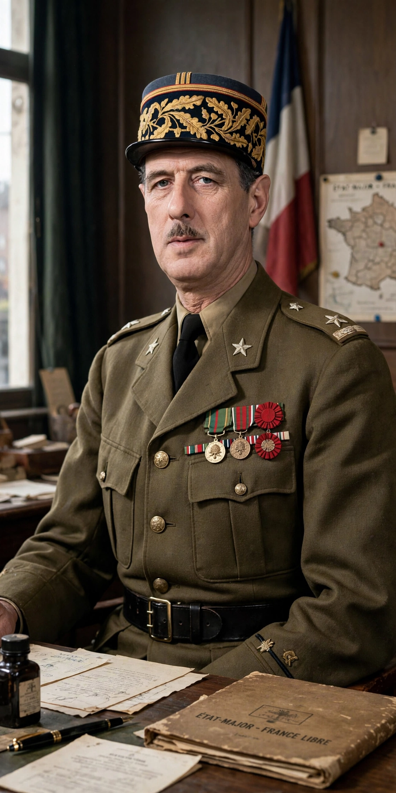

Charles André Joseph Marie de Gaulle (22 November 1890 – 9 November 1970) was a French general and statesman who led Free France against Nazi Germany in World War II and founded the Fifth Republic, serving as its first president from 1959 to 1969.
An advocate of armoured warfare in the interwar years, de Gaulle fled to London in June 1940 and issued the Appeal of 18 June. He chaired the provisional government 1944–1946, resigned over constitutional disputes, and returned to power in 1958 amid the Algerian War crisis. As president he granted Algerian independence, pursued an independent foreign policy, withdrew from NATO's integrated command, developed France's nuclear deterrent, and promoted Franco-German reconciliation and European integration on intergovernmental terms.
Gaullism remains a major tradition in French politics; Paris's main airport bears his name.